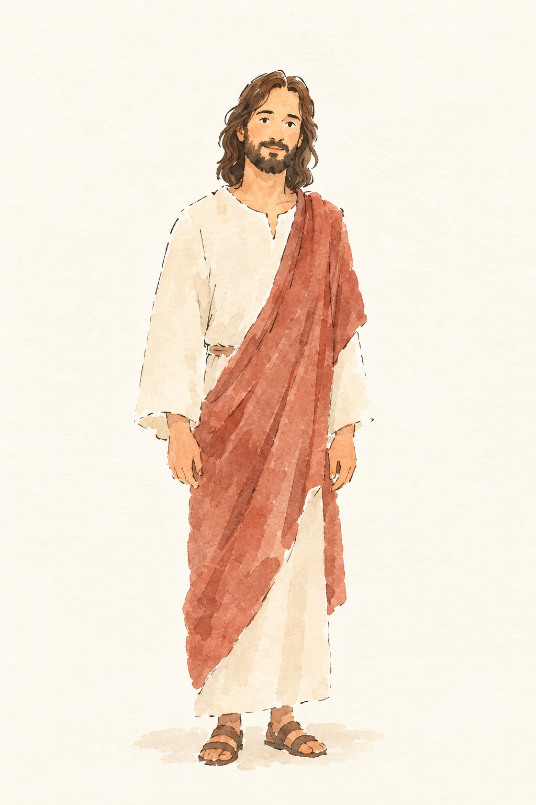
FIG-JESUS__r1v1.png ✔ gewählt: bestanden, 5 Punkte, Kern 2 Augen- und Hautfarbe nicht beschrieben.
Blind: A man stands alone, facing forward. His hands hang loosely at his sides. – The figure resembles conventional depictions of Jesus, but no particular Bible story or moment can be identified.
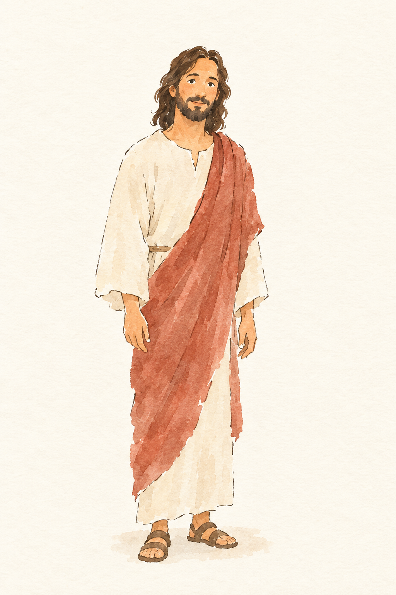
FIG-JESUS__r1v2.png: bestanden, 5 Punkte, Kern 2 Augenfarbe, Hautton und genaues Alter nicht beschrieben.
Blind: A man stands alone, facing mostly forward. His arms hang at his sides. – The figure resembles traditional depictions of Jesus, but no particular Bible story or moment can be identified from the image alone.
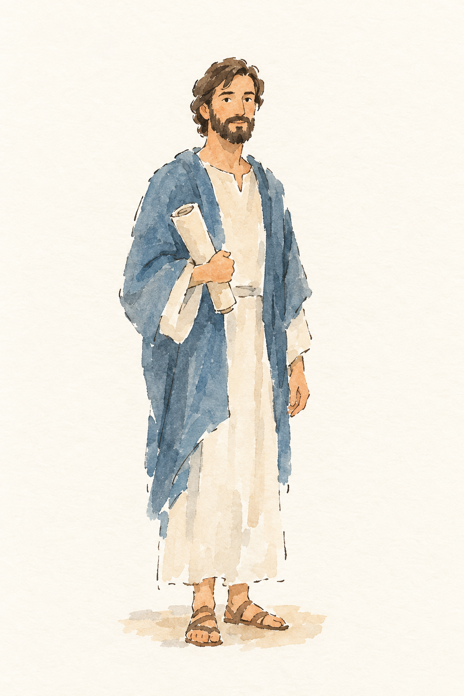
FIG-APOLLOS__r1v1.png: durchgefallen, 5 Punkte, Kern 2 Vollbart statt leichtem Bart; Petrolblau und Alter nicht genauer erkennbar.
Blind: A man stands alone holding a rolled scroll. He faces generally toward the viewer, with his other arm at his side. – The figure could be intended as Jesus with a scroll, perhaps recalling his reading from Isaiah in Luke 4, but the rolled scroll and absence of other details do not establish a particular story or moment.
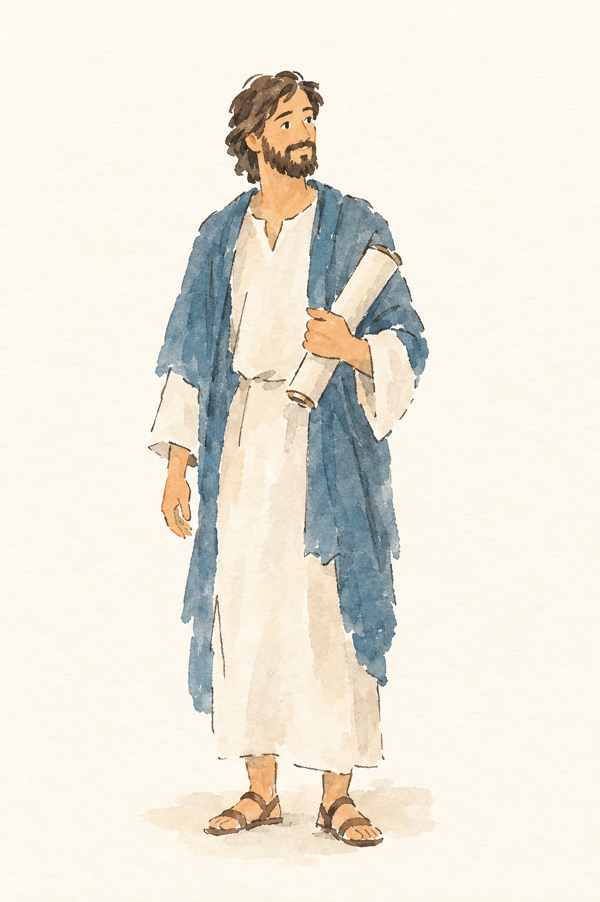
FIG-APOLLOS__r1v2.png ✔ gewählt: bestanden, 5 Punkte, Kern 2 Die Schriftrolle liegt vor der Brust statt unter dem Arm; der genaue Blauton ist unklar.
Blind: A man stands holding a rolled scroll against his chest. He looks upward to the right. – The figure could represent someone in a Bible story, but no particular story or moment can be identified from the picture alone.
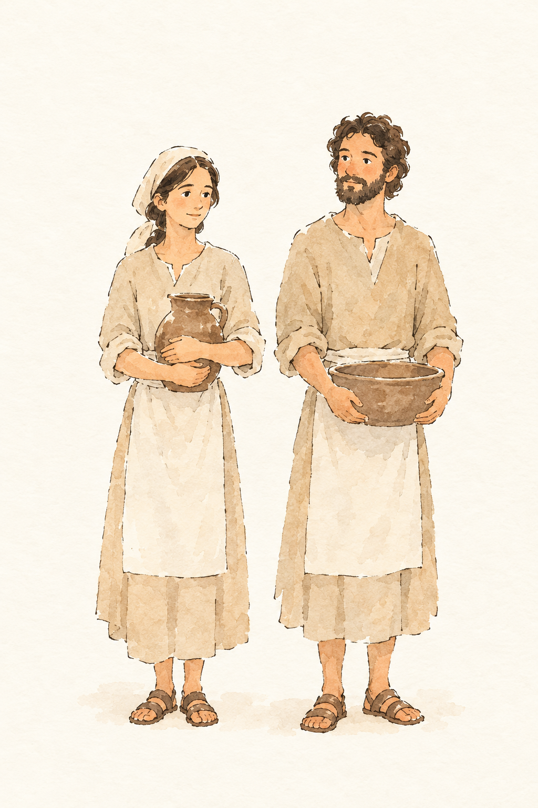
FIG-GRUPPE-DIENER__r1v1.png ✔ gewählt: bestanden, 4 Punkte, Kern 1 Die Frau trägt ein Kopftuch statt barhäuptig zu sein; Gürtel und hochgekrempelte Ärmel sind nicht erkennbar, unterschiedliche Altersstufen nur eingeschränkt.
Blind: The woman and man stand side by side holding vessels. They appear to glance toward each other. – No particular Bible story or moment can be identified from the visible details.
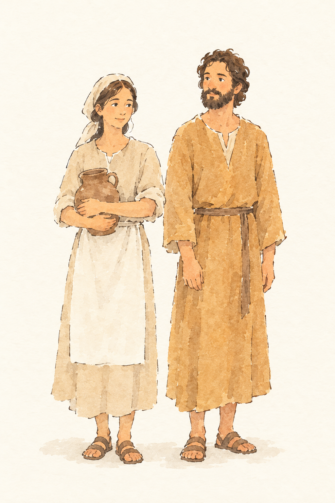
FIG-GRUPPE-DIENER__r1v2.png: durchgefallen, 4 Punkte, Kern 1 Die Frau trägt ein Kopftuch; hochgekrempelte Ärmel fehlen. Nur bei der Frau wird eine Schürze genannt, unterschiedliche Altersstufen sind nicht klar erkennbar.
Blind: A woman and a man stand side by side. The woman holds a jug and looks toward the man, while he looks to the left. – No particular Bible story or moment can be identified reliably from the picture alone.
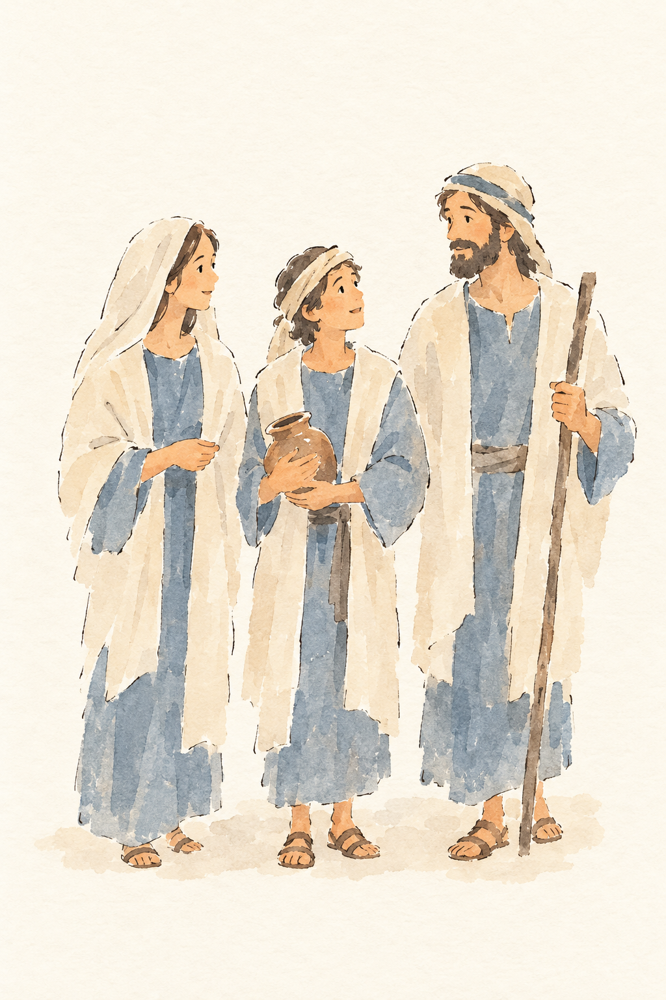
FIG-GRUPPE-GLAUBENDE__r1v1.png: durchgefallen, 5 Punkte, Kern 2 Nichts.
Blind: Three people stand close together, with the boy holding a jar and looking up at the man. The woman and man face toward the boy, and the man holds a staff. – Possibly Mary, Joseph and the young Jesus on a journey, but the image does not establish a particular Bible story or exact moment.
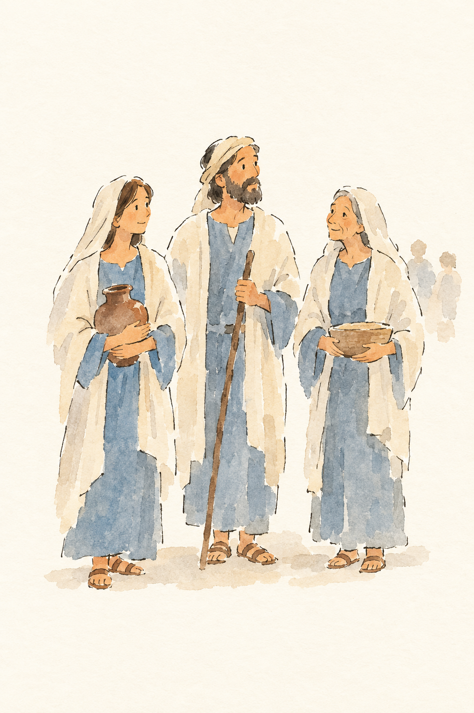
FIG-GRUPPE-GLAUBENDE__r1v2.png: durchgefallen, 5 Punkte, Kern 2
Blind: Three people stand together carrying a jar, a staff and a bowl. The two women face the man, while two faint figures appear in the background. – No specific Bible story or moment can be identified reliably from the visible details.
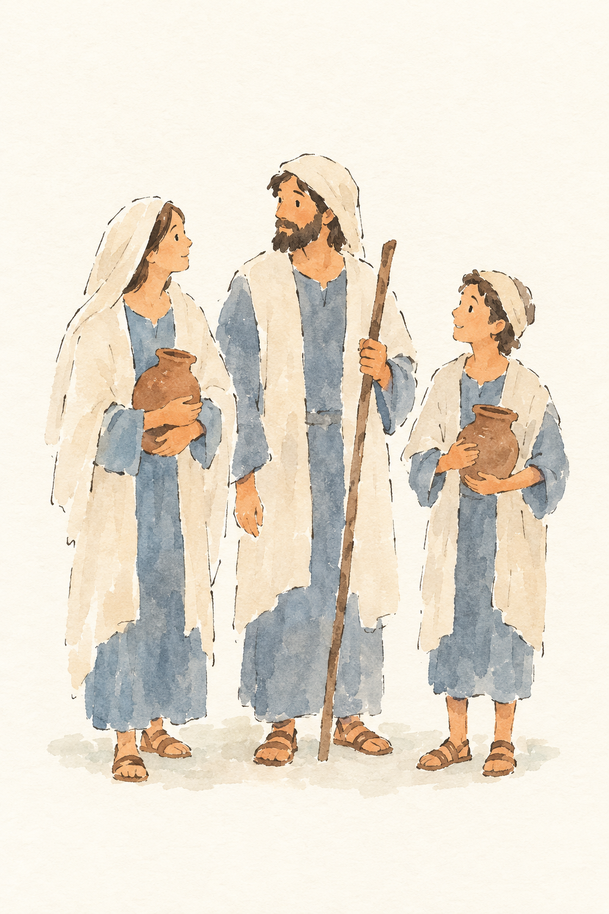
FIG-GRUPPE-GLAUBENDE__r2v1.png: durchgefallen, 5 Punkte, Kern 2 Nichts Wesentliches.
Blind: Three people stand together, the woman and boy each holding a jar. The man holds a staff and looks at the woman, while the boy looks up at him. – The group could suggest the Holy Family, but there are no distinctive visual clues identifying a particular Bible story or moment.
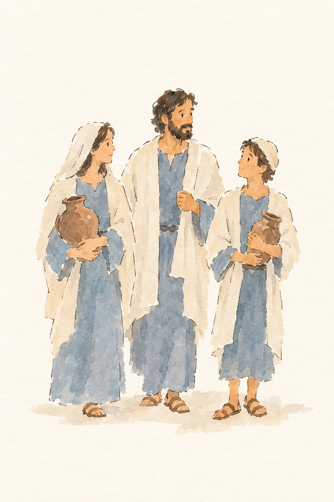
FIG-GRUPPE-GLAUBENDE__r2v2.png: durchgefallen, 5 Punkte, Kern 2
Blind: Three people stand together, with the two outer figures holding jars. The woman looks toward the man, while the man and the boy face one another. – No particular Bible story or exact moment can be identified reliably from the visible details.
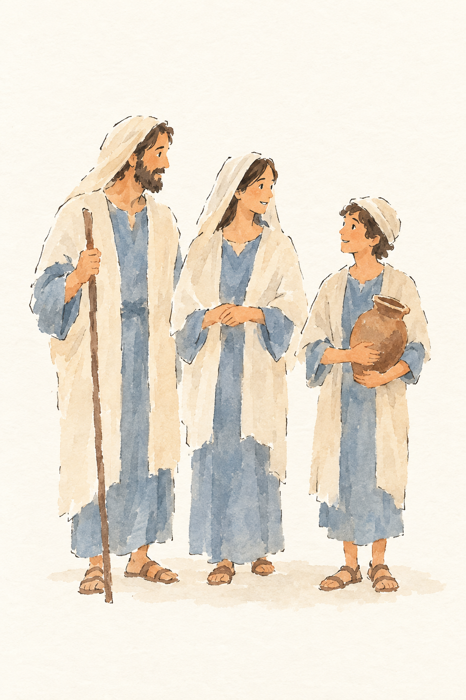
FIG-GRUPPE-GLAUBENDE__r3v1.png: durchgefallen, 5 Punkte, Kern 2
Blind: Three people stand together in long robes. The man holds a staff, while the woman and boy smile toward one another and the boy carries a jar. – They could be intended as Mary, Joseph and the young Jesus, but no distinctive event is visible, so a particular Bible story or moment cannot be identified confidently.
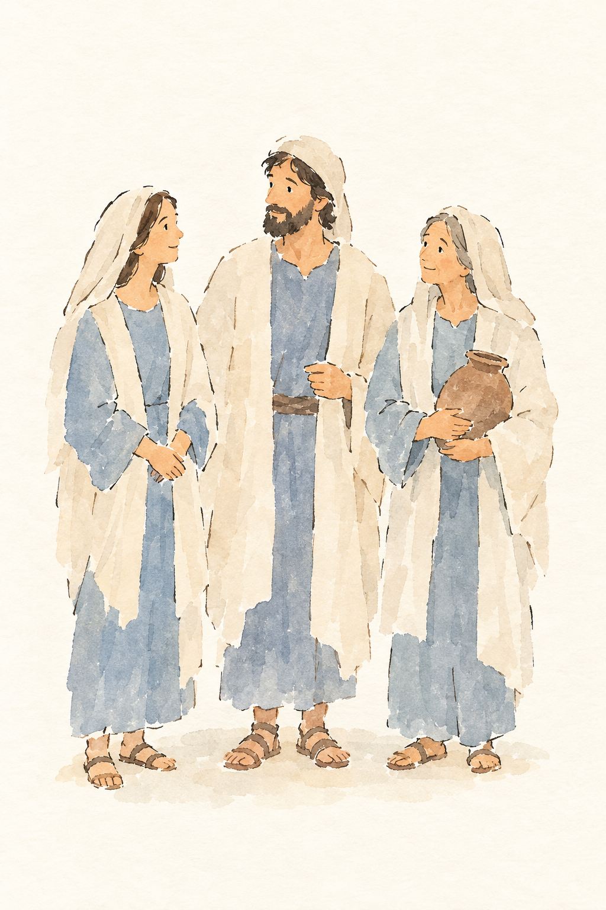
FIG-GRUPPE-GLAUBENDE__r3v2.png: durchgefallen, 5 Punkte, Kern 2
Blind: Three people stand together, facing one another. The woman on the right holds a jar while the man raises one hand near his waist. – Possibly Jesus with Mary and Martha, but the picture lacks enough distinctive details to identify a Bible story or an exact moment confidently.
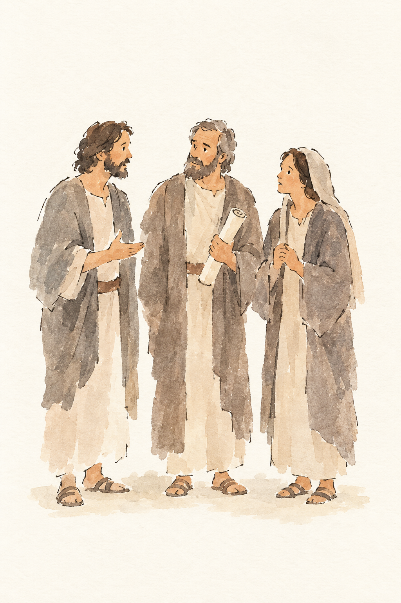
FIG-GRUPPE-IRRLEHRER__r1v1.png: durchgefallen, 4 Punkte, Kern 1 Eine der drei Personen wird als Frau statt als Mann beschrieben.
Blind: The three people stand together, apparently conversing. The man on the left gestures toward the middle man, who holds a scroll, while the woman watches with her hands clasped. – The picture does not contain enough distinctive clues to identify a particular Bible story or moment reliably.
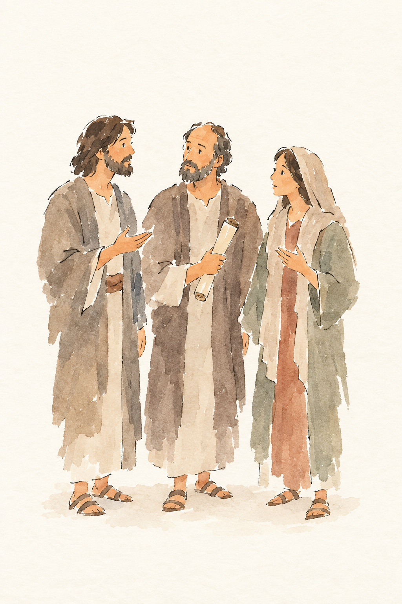
FIG-GRUPPE-IRRLEHRER__r1v2.png: durchgefallen, 5 Punkte, Kern 2 Nichts Wesentliches.
Blind: Three people stand together, apparently conversing. The man on the left gestures toward the center man, who holds a scroll, while the woman watches. – Possibly Jesus speaking with two followers, perhaps on the road to Emmaus, but there are no clear visual details identifying a particular Bible story or moment.
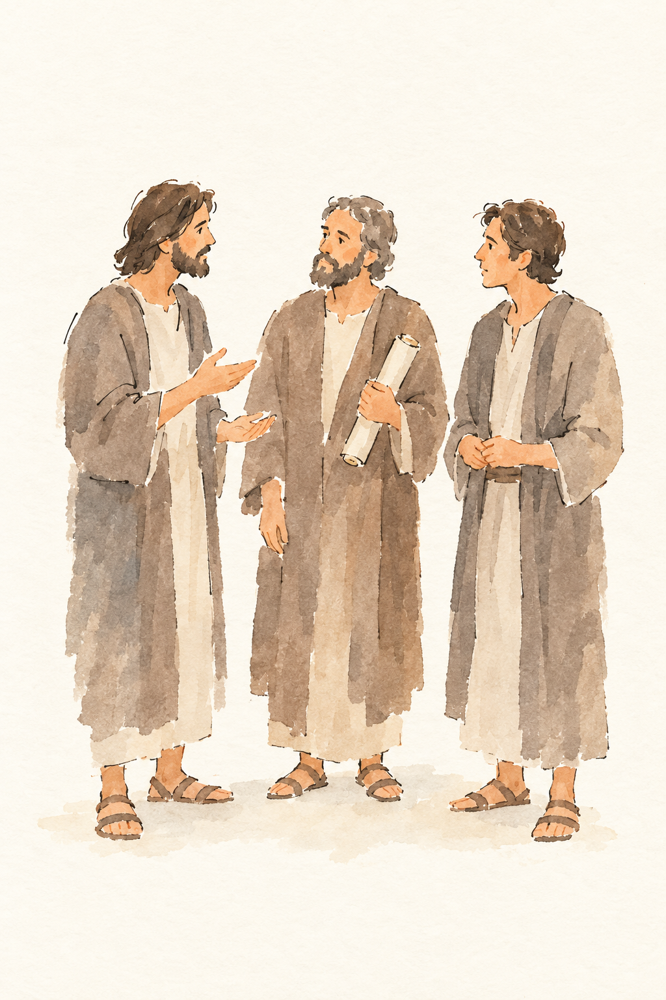
FIG-GRUPPE-IRRLEHRER__r2v1.png ✔ gewählt: bestanden, 5 Punkte, Kern 2 Nichts Wesentliches.
Blind: Three men stand together as the man on the left gestures toward the middle man. The middle man holds a scroll, and the man on the right watches them. – Possibly Jesus speaking with two disciples, but no visible detail identifies a particular Bible story or moment securely.
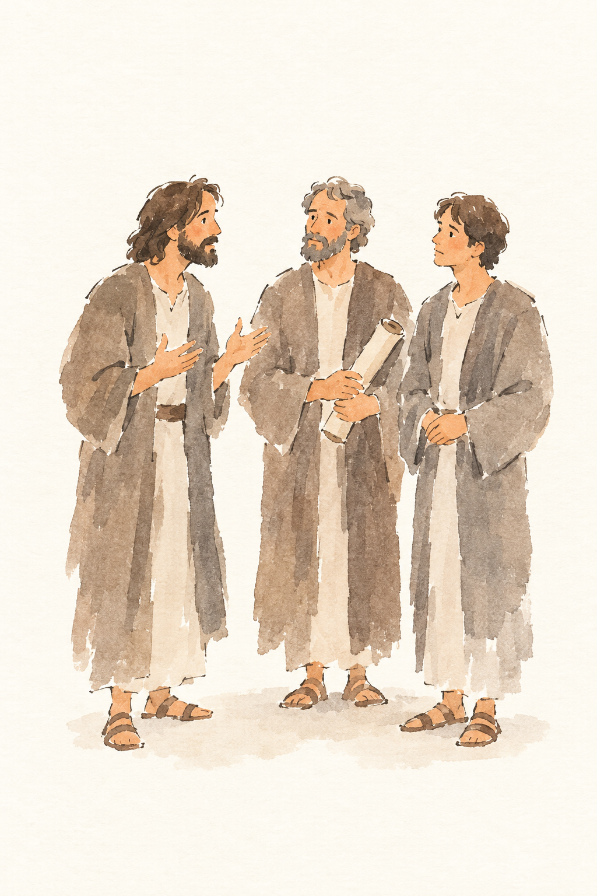
FIG-GRUPPE-IRRLEHRER__r2v2.png: bestanden, 5 Punkte, Kern 2
Blind: The man on the left gestures with both hands as if speaking. The other two face him or the group, and the middle man holds a scroll. – Possibly Jesus speaking to two disciples, perhaps explaining the scriptures, but the image does not establish a particular Bible story or exact moment.
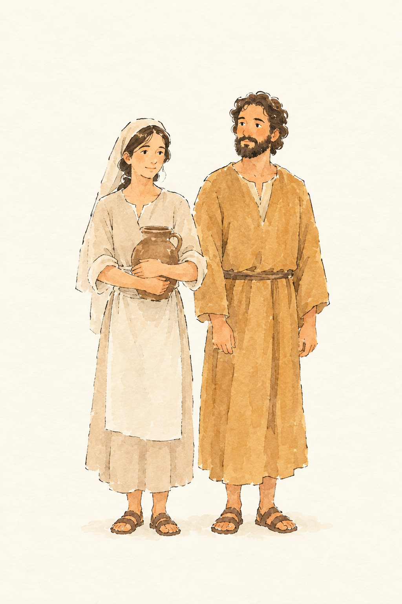
FIG-GRUPPE-JUENGER__r1v1.png: durchgefallen, 3 Punkte, Kern 1 Nur ein bärtiger Mann statt mehrerer Jünger; die Nähe zu Jesus ist nicht erkennbar.
Blind: A woman and a man stand side by side. The woman holds a jug while the man rests his hands at his sides. – The pair could represent Mary and Joseph, but there are no distinctive clues identifying a Bible story or a particular moment.
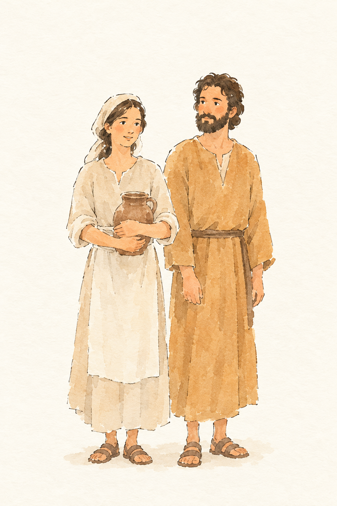
FIG-GRUPPE-JUENGER__r1v2.png: durchgefallen, 3 Punkte, Kern 1 Nur ein bärtiger Mann statt mehrerer Jünger; Jesus ist nicht erkennbar.
Blind: A woman and a man stand side by side. The woman holds a jug while the man turns his head toward her. – The clothing and jug could evoke a biblical scene, but there is not enough visible evidence to identify a particular story or moment.
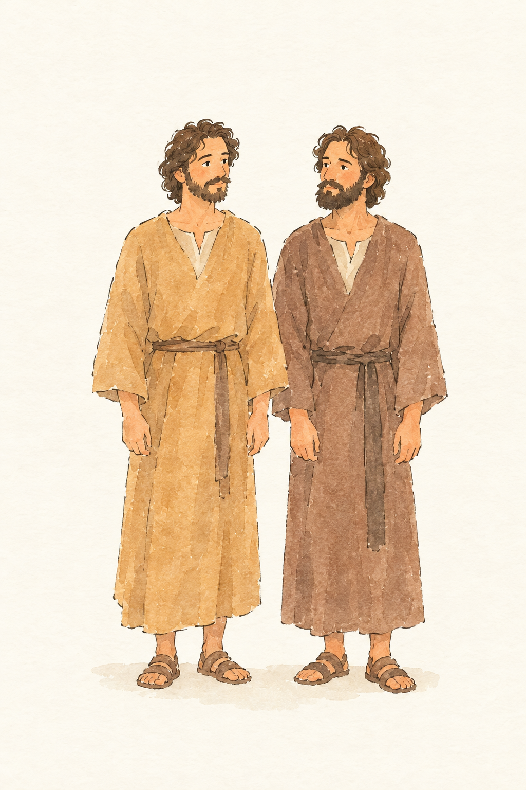
FIG-GRUPPE-JUENGER__r2v1.png ✔ gewählt: bestanden, 3 Punkte, Kern 1 Die Nähe zu Jesus ist nicht erkennbar; nur zwei Männer werden beschrieben.
Blind: Two men stand side by side, facing slightly toward each other. Their hands hang at their sides. – No specific Bible story or moment can be identified from the visible details alone.
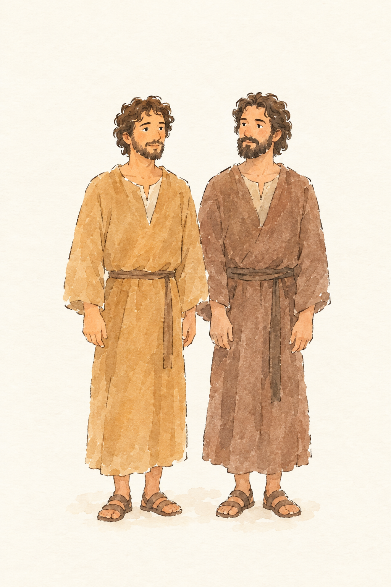
FIG-GRUPPE-JUENGER__r2v2.png: bestanden, 3 Punkte, Kern 1 Die Nähe zu Jesus ist nicht erkennbar.
Blind: Two men stand side by side with their arms lowered. They turn their heads and look toward each other. – No particular Bible story or moment can be identified from the image alone.
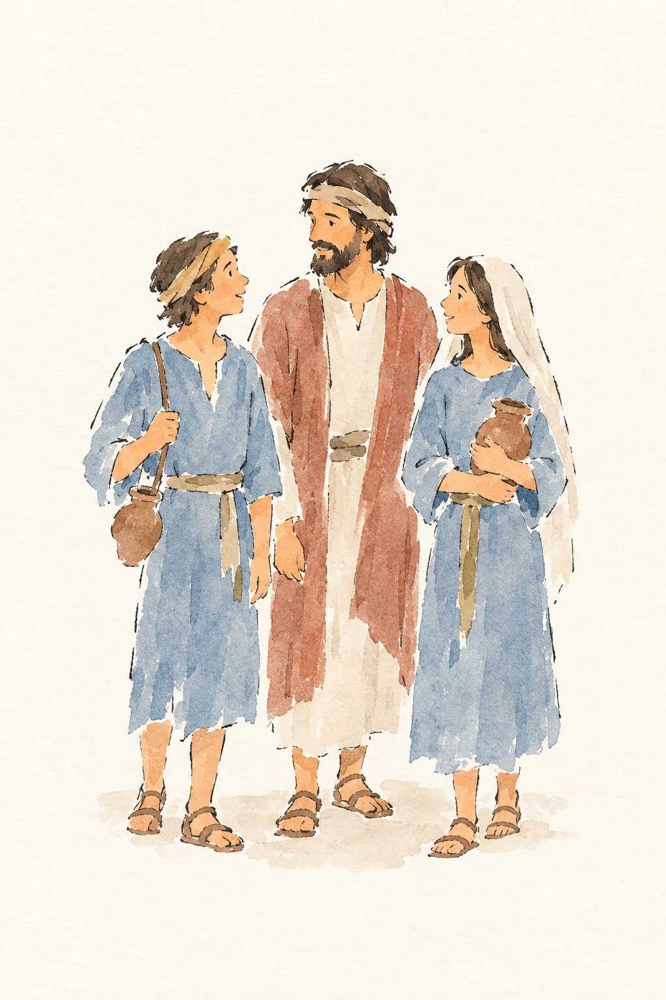
FIG-GRUPPE-KINDER__r1v1.png: durchgefallen, 4 Punkte, Kern 2 Verwandtschaft und genauer Blauton nicht eindeutig erkennbar.
Blind: Three figures stand close together, with the two younger figures facing the bearded man. They appear to be smiling, and each younger figure carries a clay vessel. – The bearded man and ancient-style clothing could suggest Jesus with young followers, but no specific Bible story or moment can be identified confidently from the picture alone.
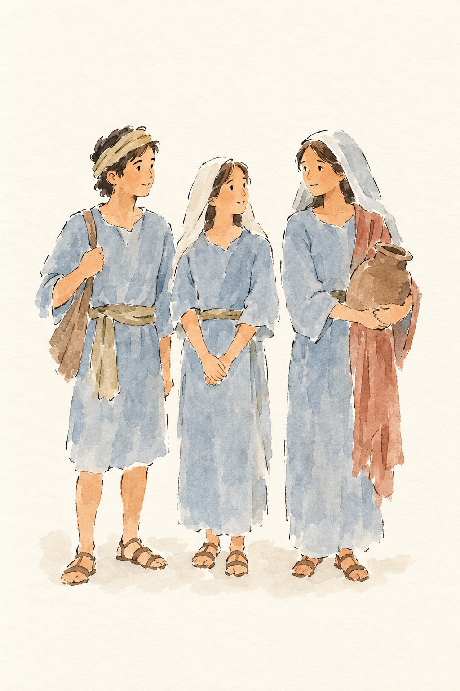
FIG-GRUPPE-KINDER__r1v2.png: durchgefallen, 4 Punkte, Kern 2
Blind: Three people stand close together, looking toward one another. The person on the right cradles a jar, while the middle person clasps her hands and the person on the left holds a bag strap. – There is not enough visible evidence to identify a particular Bible story or moment.
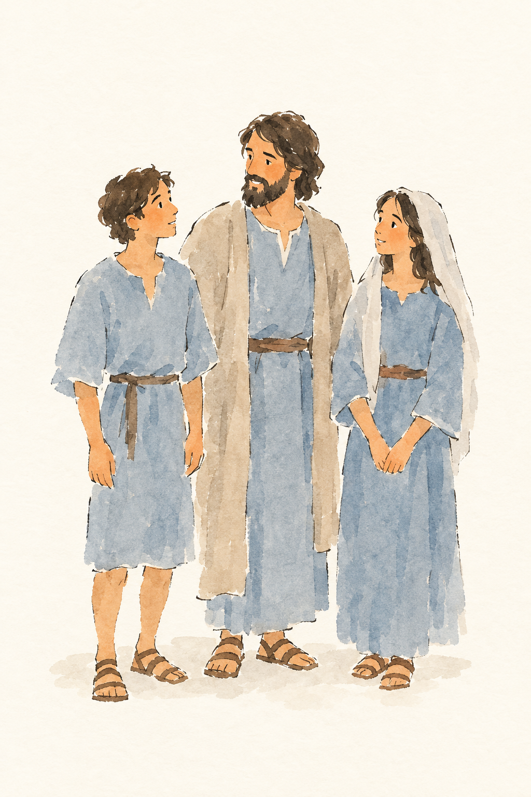
FIG-GRUPPE-KINDER__r2v1.png ✔ gewählt: bestanden, 4 Punkte, Kern 2
Blind: Three people stand close together. The boy and the man look at each other, while the young woman looks toward the man. – The clothing could suggest a biblical illustration, but there are no clear visual clues identifying a particular story or moment.
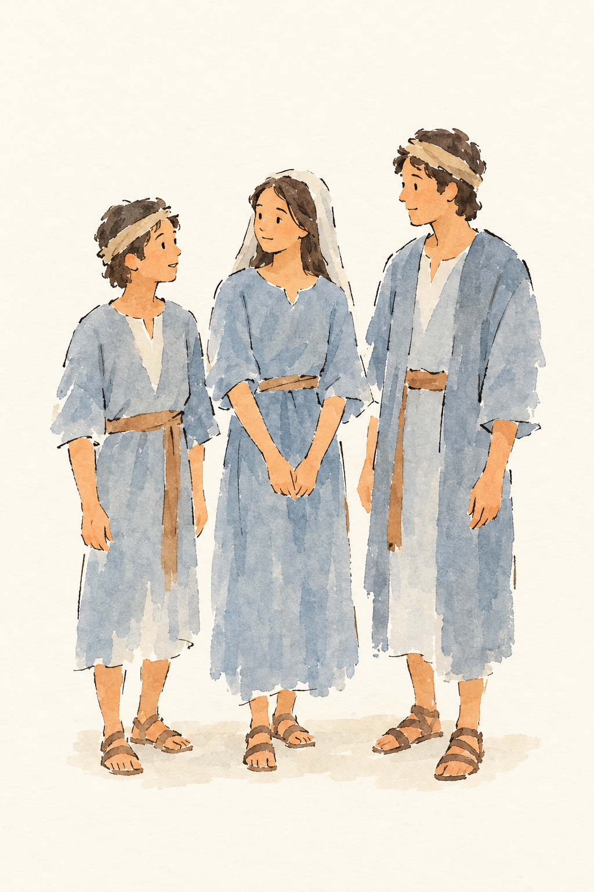
FIG-GRUPPE-KINDER__r2v2.png: durchgefallen, 3 Punkte, Kern 1 Drei statt zwei Personen; nur eine wird eindeutig als jugendlich beschrieben. Taubenblau und die Verwandtschaft zum Ältesten sind nicht erkennbar.
Blind: Three people stand close together. The boy and woman look toward one another, while the taller man looks toward the woman. – No specific Bible story or moment can be identified reliably from the visible details alone.
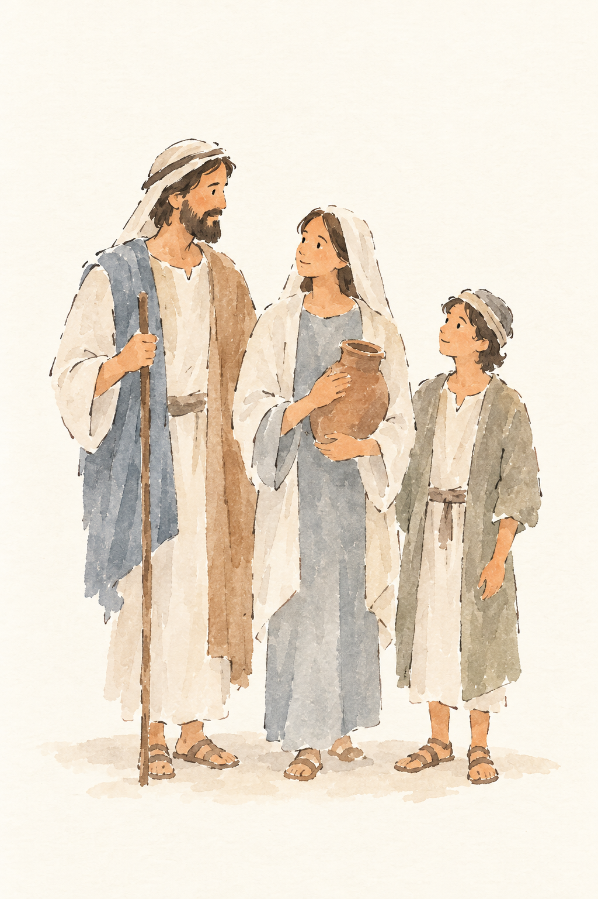
FIG-GRUPPE-MENGE__r1v1.png: durchgefallen, 5 Punkte, Kern 2
Blind: Three people stand together. The man and woman look at each other while the woman holds a jar and the boy looks up toward them. – The figures might represent Mary, Joseph and the young Jesus, perhaps on a journey, but no specific Bible story or moment can be identified confidently from the picture alone.
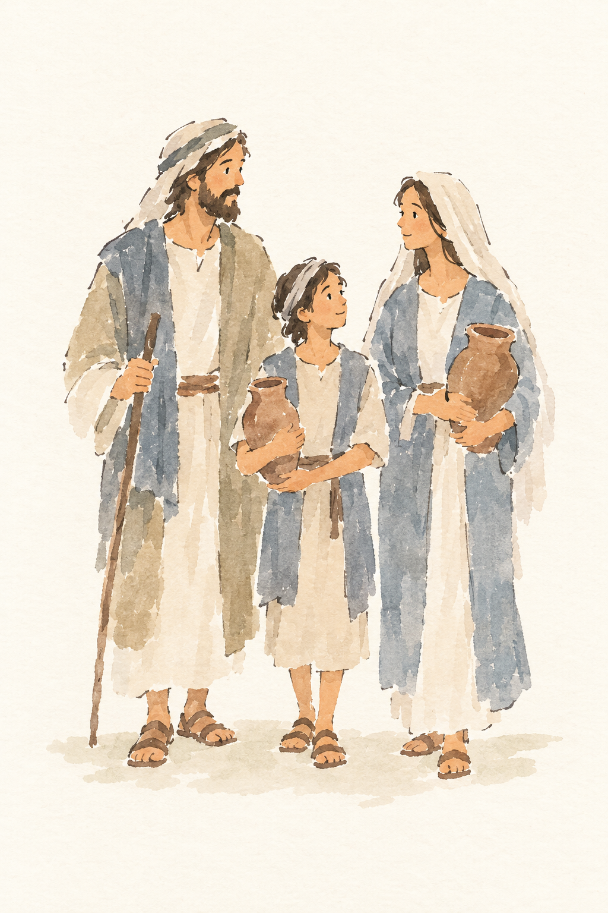
FIG-GRUPPE-MENGE__r1v2.png: durchgefallen, 5 Punkte, Kern 2
Blind: The three people stand together and look toward one another. The boy and woman hold clay jars, while the man holds a staff. – They could represent the Holy Family, perhaps on a journey, but no identifiable detail establishes a particular Bible story or moment.
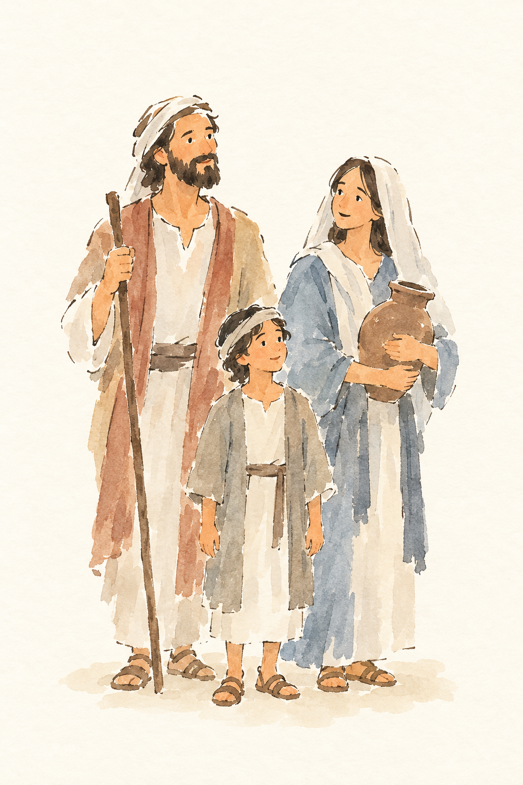
FIG-GRUPPE-MENGE__r2v1.png: durchgefallen, 5 Punkte, Kern 2
Blind: Three people stand close together. The man holds a staff, the woman carries a jar, and the boy stands between them. – Possibly Mary, Joseph and the young Jesus on a journey, but the picture does not establish which journey or exact moment.
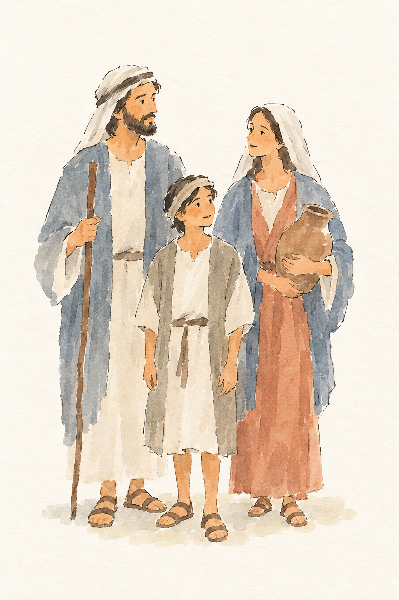
FIG-GRUPPE-MENGE__r2v2.png: durchgefallen, 5 Punkte, Kern 2
Blind: The three people stand close together. The man holds a staff, the woman cradles a jar, and the boy looks up toward her. – They may represent Mary, Joseph and the young Jesus, perhaps on a journey. No visible detail identifies a particular biblical event or exact moment.
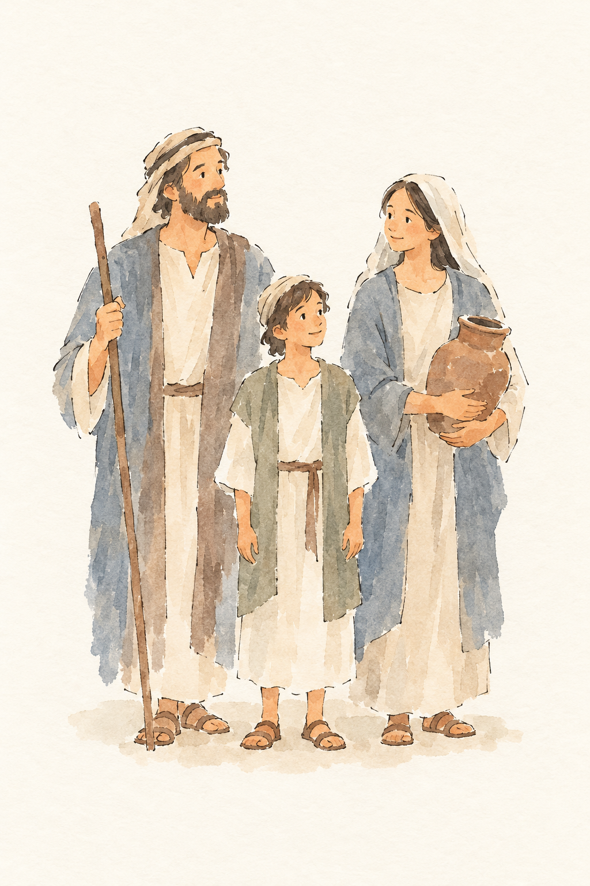
FIG-GRUPPE-MENGE__r3v1.png: durchgefallen, 5 Punkte, Kern 2
Blind: A man, a boy and a woman stand together, looking toward one another. The man holds a staff and the woman cradles a jar. – They could represent Joseph, Mary and the young Jesus, perhaps traveling as a family. No visible detail identifies a particular Bible episode or exact moment.
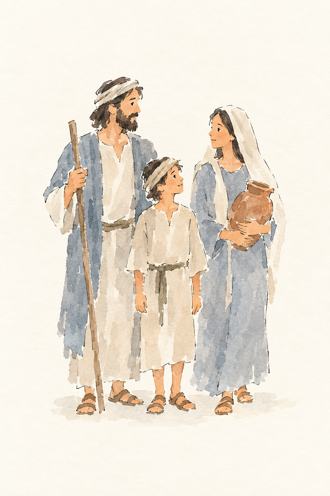
FIG-GRUPPE-MENGE__r3v2.png: durchgefallen, 5 Punkte, Kern 2
Blind: The three figures stand together, looking toward one another. The man holds a staff, while the woman carries a jar and the boy smiles up at her. – Possibly the Holy Family—Mary, Joseph and the young Jesus—on a journey. The image does not identify a particular journey or exact biblical moment.
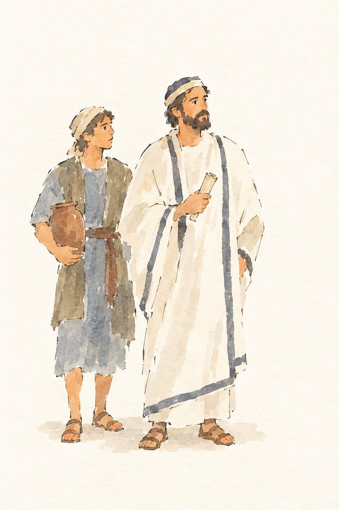
FIG-GRUPPE-OBERE__r1v1.png: durchgefallen, 4 Punkte, Kern 2
Blind: Two figures stand side by side, looking toward the upper right. The younger person carries a jar, while the older man holds a scroll. – No specific Bible story or moment can be identified reliably from the visible details.
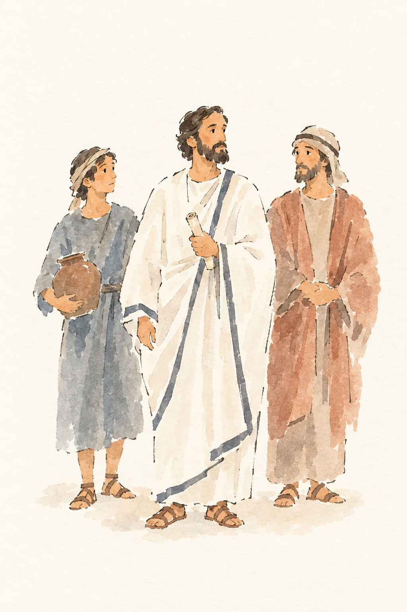
FIG-GRUPPE-OBERE__r1v2.png: durchgefallen, 3 Punkte, Kern 1 Statt eines Begleiters sind zwei weitere Personen zu sehen.
Blind: Three people stand together, with the two outer figures looking toward the central man. The young person holds a jar, the central man holds a scroll, and the man on the right clasps his hands. – The central figure could be intended as Jesus with two other people, but no specific Bible story or exact moment can be identified confidently from the picture alone.
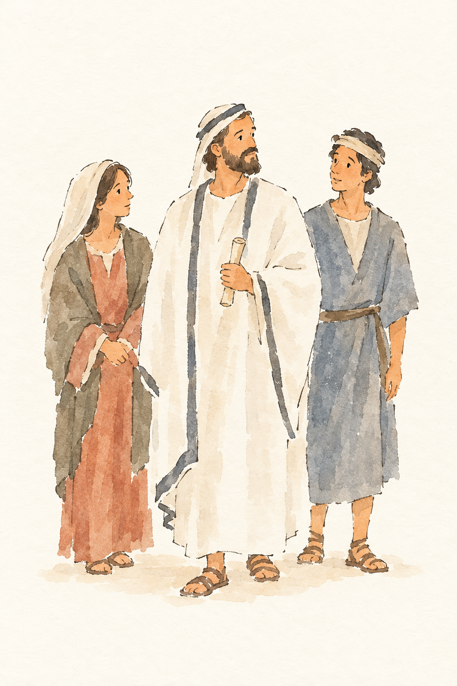
FIG-GRUPPE-OBERE__r2v1.png: durchgefallen, 3 Punkte, Kern 1 Zusätzlich zum möglichen Begleiter ist eine Frau dargestellt; ein schmaler dunkler Saum ist nicht eindeutig erkennbar.
Blind: Three people stand close together, with the woman and the young man looking toward the bearded man. He holds a scroll and turns his head toward the young man. – The clothing could suggest a Bible illustration, but there are not enough distinctive details to identify a particular story or moment.
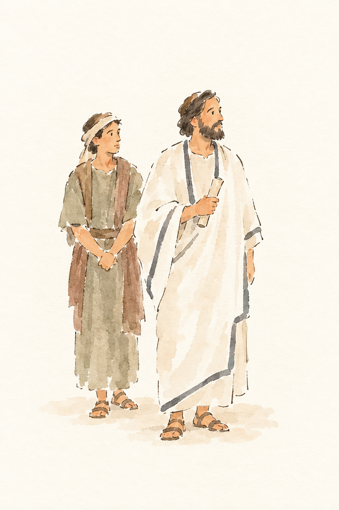
FIG-GRUPPE-OBERE__r2v2.png ✔ gewählt: bestanden, 4 Punkte, Kern 2
Blind: Two people stand side by side, both looking toward the right. The younger person clasps his hands while the older man holds a rolled sheet. – The clothing and scroll could suggest a biblical scene, but there is not enough visible information to identify a particular story or moment.
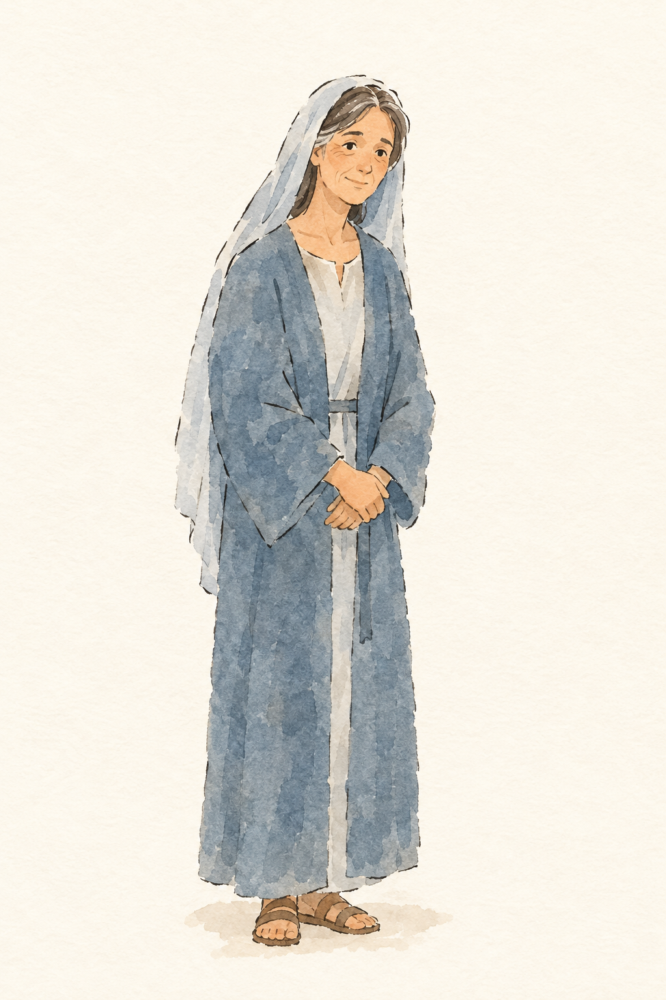
FIG-MARIA-MUTTER-JESU__r1v1.png ✔ gewählt: bestanden, 5 Punkte, Kern 2 Leicht gebeugte Haltung und feine Gesichtsfalten nicht erwähnt.
Blind: A woman stands alone with her hands clasped in front of her. She tilts her head slightly and smiles. – The image does not show enough to identify a particular Bible story or moment.
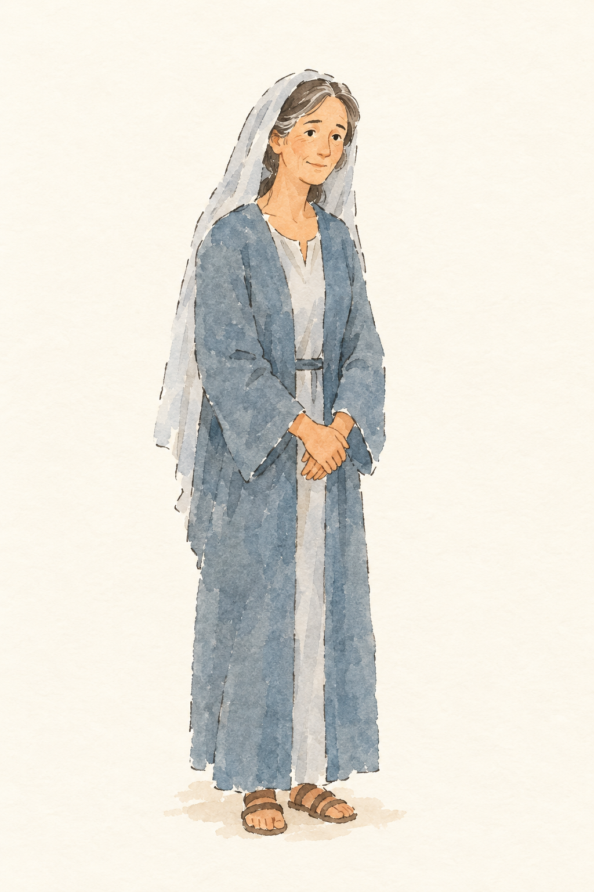
FIG-MARIA-MUTTER-JESU__r1v2.png: bestanden, 4 Punkte, Kern 1 Die leicht gebeugte Haltung und die feinen Gesichtsfalten werden nicht erwähnt; der Schleier erscheint nur als hell, nicht eindeutig blaugrau.
Blind: A woman stands alone with her hands folded in front of her. She looks slightly to the right with a gentle expression. – No particular Bible story or moment can be identified from the picture alone.
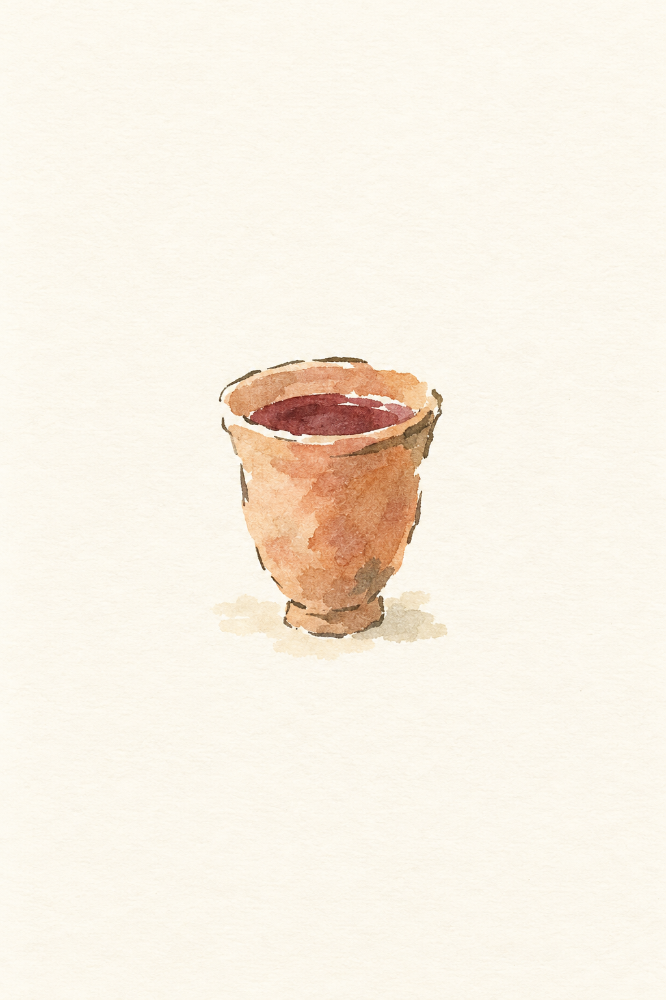
FIG-OBJ-BECHER-VOLL__r1v1.png: bestanden, 3 Punkte, Kern 1 Ton als Material und Rotwein sind nicht eindeutig benannt.
Blind: A cup stands upright with dark red liquid inside. No people or activity are shown. – The cup alone does not identify a particular Bible story or moment.
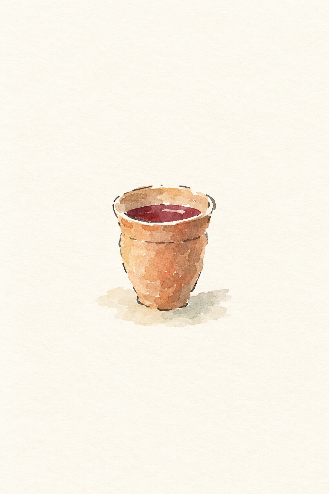
FIG-OBJ-BECHER-VOLL__r1v2.png ✔ gewählt: bestanden, 4 Punkte, Kern 2 Nichts.
Blind: A cup of dark red liquid sits by itself. Nothing is visibly moving. – The cup could evoke wine in a Bible story, but there is not enough visible information to identify a particular story or moment.
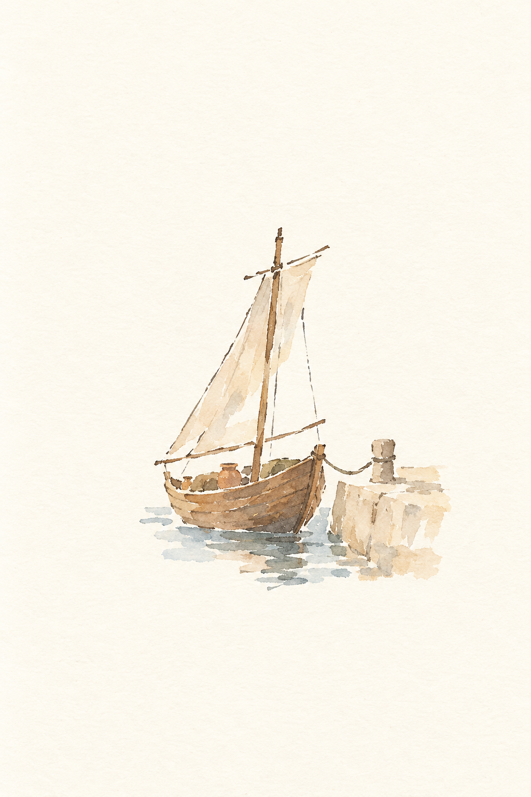
FIG-OBJ-BOOT__r1v1.png: durchgefallen, 4 Punkte, Kern 2
Blind: A small sailboat is moored beside a stone pier. No people or movement are visible. – No specific Bible story or moment can be identified from the picture alone.
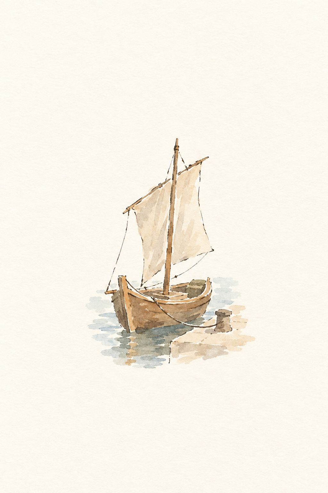
FIG-OBJ-BOOT__r1v2.png ✔ gewählt: bestanden, 4 Punkte, Kern 2
Blind: A small sailboat is moored beside a quay. Its sail is raised, and no one is visible aboard. – No particular Bible story or moment can be identified from the image alone.
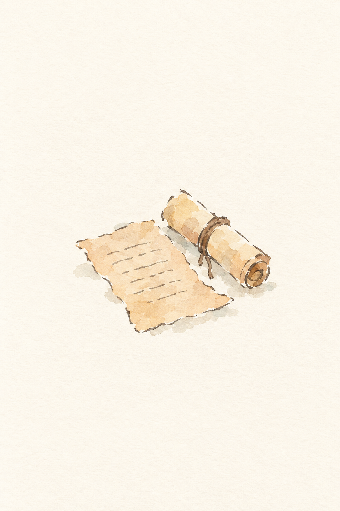
FIG-OBJ-BRIEF__r1v1.png ✔ gewählt: bestanden, 3 Punkte, Kern 2 Nichts Wesentliches fehlt.
Blind: A flat parchment sheet lies beside a tied scroll. No person or active movement is shown. – No specific Bible story or moment can be identified from the objects alone.
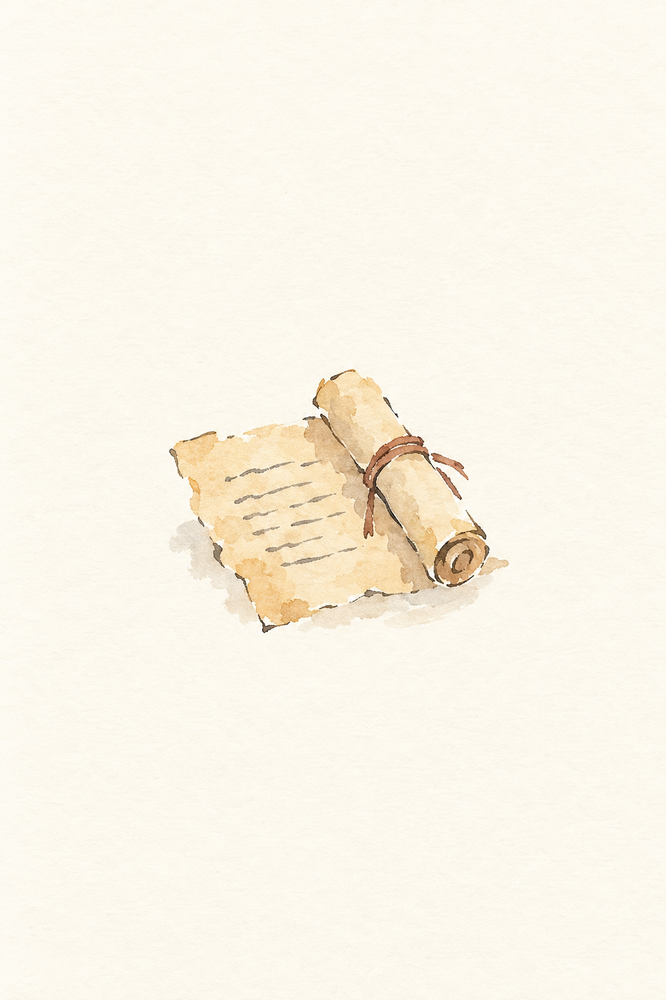
FIG-OBJ-BRIEF__r1v2.png: bestanden, 3 Punkte, Kern 2
Blind: A partly unrolled scroll lies with its rolled end tied by a cord. No people or active movement are shown. – The scroll alone does not identify a particular Bible story or moment.
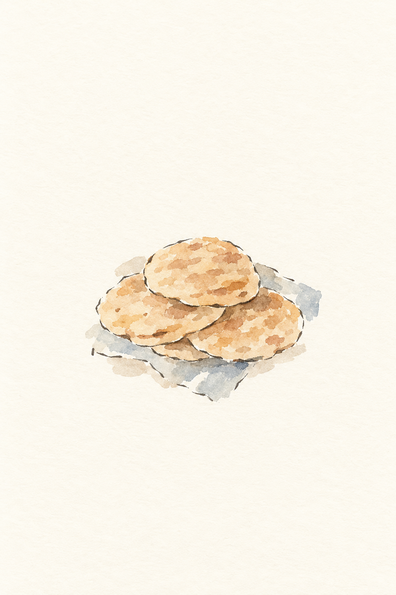
FIG-OBJ-BROT__r1v1.png ✔ gewählt: bestanden, 4 Punkte, Kern 2
Blind: Several pieces of flatbread are stacked together. No people or activity are shown. – The bread alone does not identify a particular Bible story or moment.
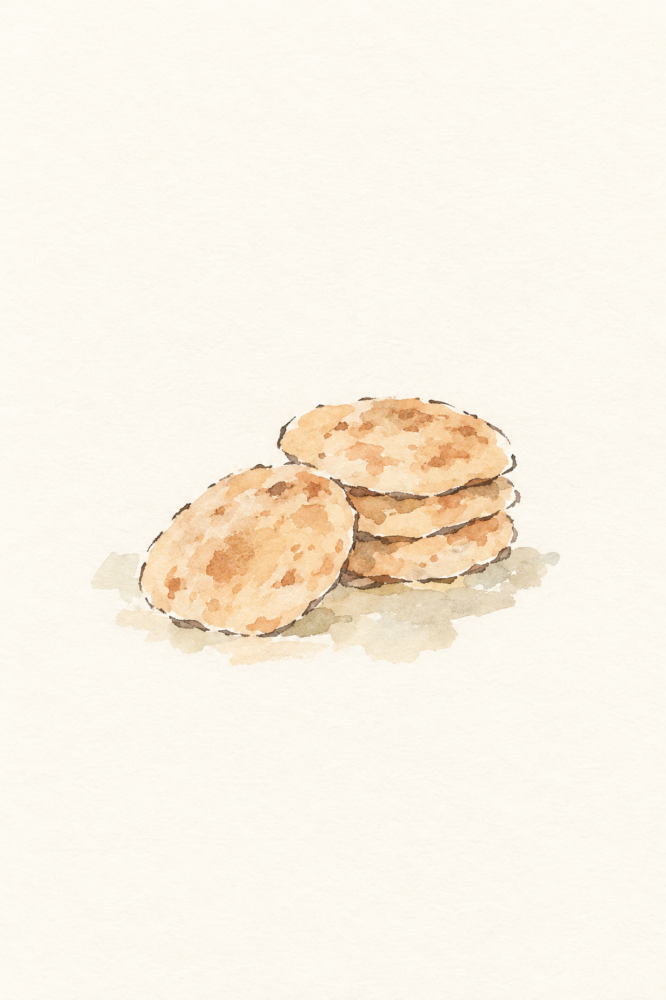
FIG-OBJ-BROT__r1v2.png: bestanden, 4 Punkte, Kern 2 Nichts
Blind: The round baked items are arranged in a small pile. No people or activity are shown. – No specific Bible story or moment can be identified from the image alone.
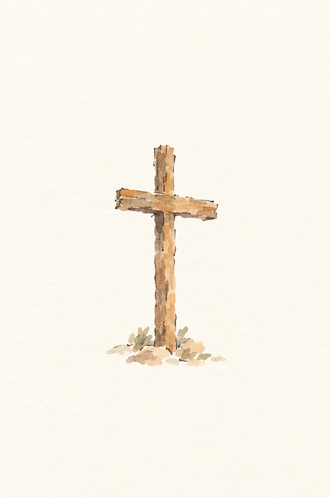
FIG-OBJ-KREUZ__r1v1.png ✔ gewählt: bestanden, 3 Punkte, Kern 2 Die raue Beschaffenheit der Balken wird nicht erwähnt.
Blind: An empty wooden cross stands upright on a small patch of ground. No people or activity are visible. – The empty cross may evoke the crucifixion of Jesus, but no specific moment in the story can be identified from the image alone.
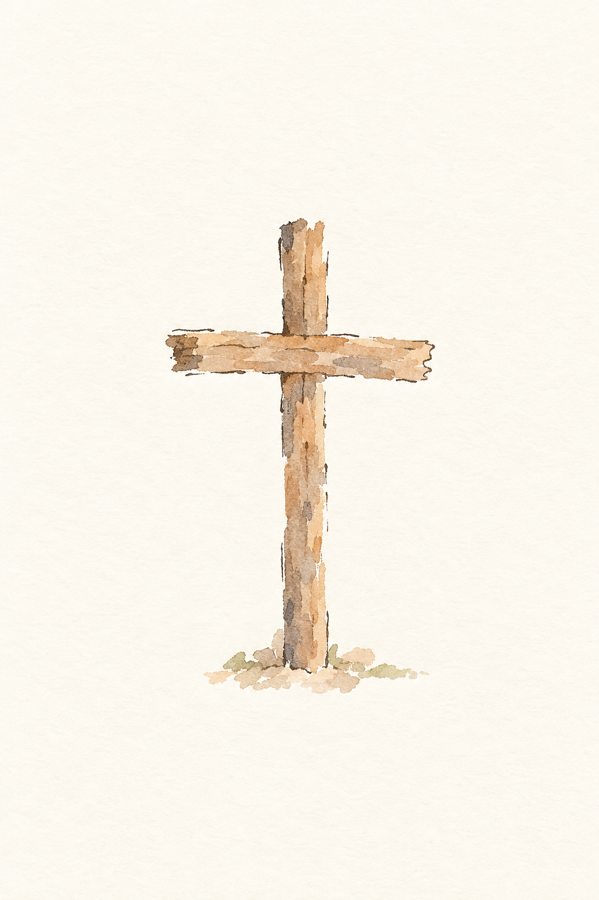
FIG-OBJ-KREUZ__r1v2.png: bestanden, 3 Punkte, Kern 2 Die raue Beschaffenheit der Balken wird nicht erwähnt.
Blind: An empty wooden cross stands upright. No people or activity are shown. – The cross may evoke Jesus' crucifixion, but the image does not identify a specific Bible story or moment.
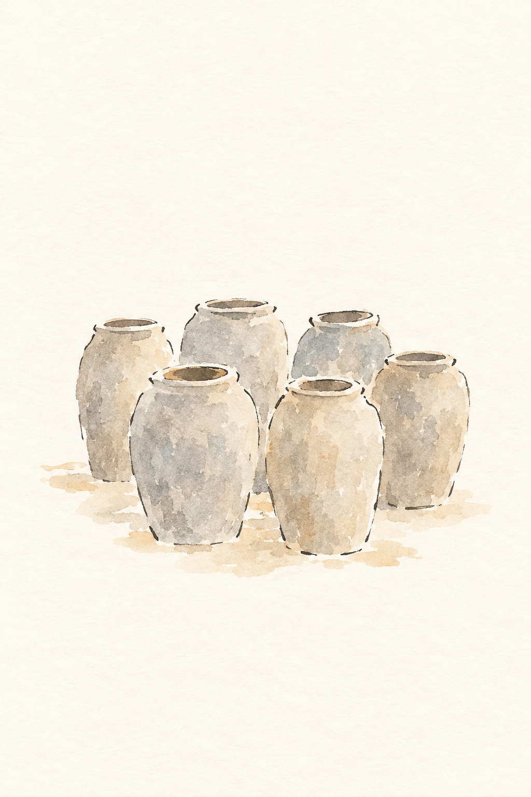
FIG-OBJ-KRUG-WASSER__r1v1.png ✔ gewählt: bestanden, 2 Punkte, Kern 1 Steinmaterial und Hüfthöhe sind nicht erkennbar; die Abgrenzung zu kleinen Tonkrügen fehlt.
Blind: Six jars stand together. No people or movement are shown. – Possibly the wedding at Cana, where six stone water jars are mentioned. No particular moment in the story can be established from the jars alone.
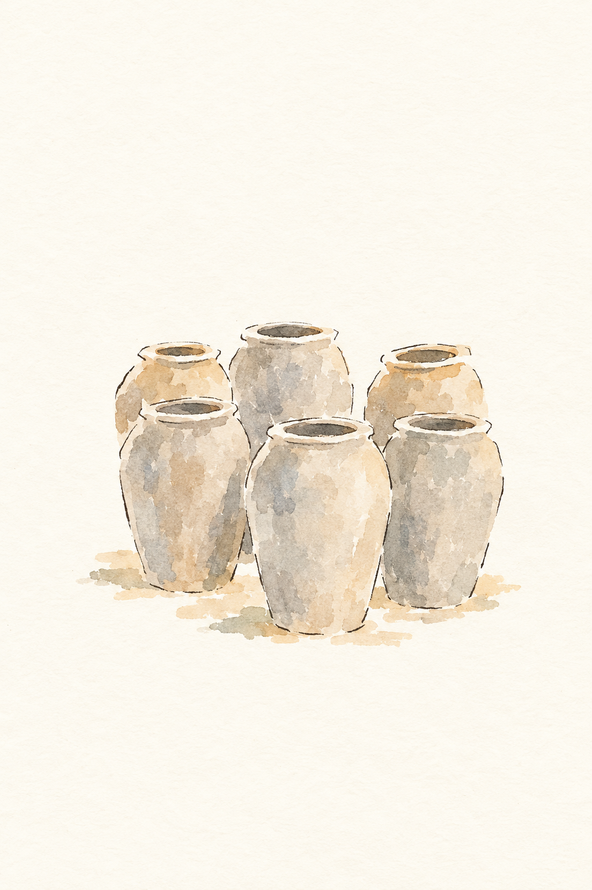
FIG-OBJ-KRUG-WASSER__r1v2.png: bestanden, 2 Punkte, Kern 1 Steinmaterial, blassgraue Farbe und Hüfthöhe fehlen.
Blind: Six jars stand together. No people or active events are shown. – Possibly the wedding at Cana, where six stone water jars are associated with Jesus turning water into wine. The image does not show enough to identify a particular moment.
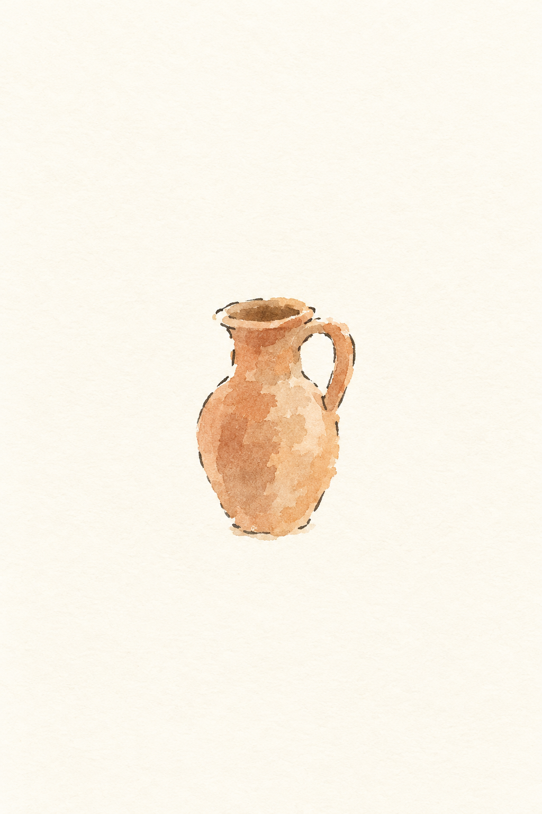
FIG-OBJ-KRUG-WEIN-LEER__r1v1.png ✔ gewählt: bestanden, 2 Punkte, Kern 1 Größe, Leerzustand und Verwendung als Weinkrug sind nicht angegeben.
Blind: A jug is shown by itself. No action is visible. – No specific Bible story or moment can be identified from the jug alone.
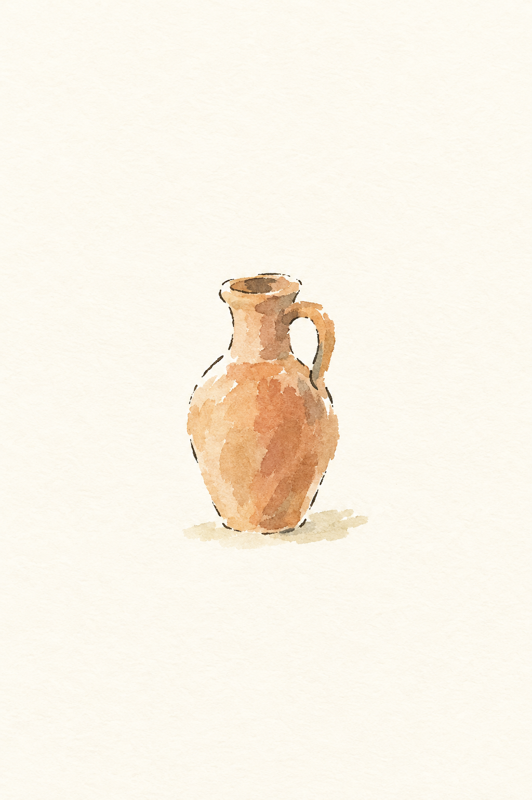
FIG-OBJ-KRUG-WEIN-LEER__r1v2.png: bestanden, 2 Punkte, Kern 1 Größe, Leerheit und Verwendung als Weinkrug bleiben unklar.
Blind: A jug stands upright on a light surface. No people or movement are shown. – No particular Bible story or moment can be identified from the jug alone.
FIG-OBJ-MUENZEN__r1v1.png ✔ gewählt: bestanden, 3 Punkte, Kern 2
Blind: Several coins lie in a loose group, with a small stack among them. No person or movement is shown. – The coins alone do not identify a particular Bible story or moment.
FIG-OBJ-MUENZEN__r1v2.png: bestanden, 3 Punkte, Kern 2
Blind: Several coins are stacked, with two more lying in front. No person or active movement is shown. – The coins could relate to a Bible story involving money, but no particular story or moment is identifiable from the picture alone.
FIG-OBJ-PEITSCHE__r1v1.png: bestanden, 3 Punkte, Kern 2
Blind: A bundle of cords is shown on its own. No person or action is depicted. – The cords could suggest the whip Jesus made when cleansing the temple, but the image alone does not establish a particular Bible story or moment.
FIG-OBJ-PEITSCHE__r1v2.png ✔ gewählt: bestanden, 4 Punkte, Kern 2
Blind: A single corded object is shown against a blank background. No action or people are depicted. – The object alone is not enough to identify a particular Bible story or moment.
FIG-OBJ-SCHRIFTROLLE__r1v1.png: unklar, 4 Punkte, Kern 2
Blind: An open scroll is shown against a plain background. No people or activity are depicted. – No specific Bible story or moment can be identified from the scroll alone.
FIG-OBJ-SCHRIFTROLLE__r1v2.png ✔ gewählt: bestanden, 3 Punkte, Kern 1 Das Holzmaterial und die schlichte Gestaltung der Stäbe werden nicht erwähnt.
Blind: A blank scroll is shown unrolled. No people or activity are depicted. – No particular Bible story or moment can be identified from the image alone.
FIG-OBJ-SCHWEIN__r1v1.png ✔ gewählt: bestanden, 2 Punkte, Kern 1 Die dunkle Farbe und die schlanke Gestalt werden nicht erwähnt.
Blind: Three pigs stand together. Two have their snouts lowered toward the ground, while the pig on the left holds its head up. – No specific Bible story or moment can be identified from the pigs alone.
FIG-OBJ-SCHWEIN__r1v2.png: bestanden, 2 Punkte, Kern 1 Es fehlt, dass die Schweine dünn und dunkel sind.
Blind: Three pigs stand together. The left pig has its snout lowered to the ground, while the other two face right. – The pigs alone do not identify a particular Bible story or moment.
FIG-ORT-SEE__r1v1.png ✔ gewählt: bestanden, 3 Punkte, Kern 2
Blind: Water lies in front of a low, hilly shoreline. No people or distinct activity are visible. – No specific Bible story or moment can be identified from the visible scene.
FIG-ORT-SEE__r1v2.png: durchgefallen, 3 Punkte, Kern 2
Blind: A small sailboat sits on the water in front of distant hills. No people or specific activity are visible. – No specific Bible story or moment can be identified from the image alone.
FIG-ORT-STADT__r1v1.png: durchgefallen, 2 Punkte, Kern 1 Die weiß gekalkten Wände und der einfache Linienzeichnungsstil werden nicht erwähnt; Kreta ist nicht erkennbar.
Blind: No people or activity are visible. The picture shows a quiet cluster of buildings with steps, vegetation, and a jar outside. – No particular Bible story or moment can be identified from the visible scene.
FIG-ORT-STADT__r1v2.png: durchgefallen, 3 Punkte, Kern 2
Blind: No people or activity are visible. The picture shows a quiet cluster of buildings with a jar outside one doorway. – No specific Bible story or moment can be identified from the image.
FIG-ORT-STADT__r2v1.png ✔ gewählt: bestanden, 3 Punkte, Kern 2
Blind: A small cluster of buildings stands along an empty path. No people or activity are visible. – No specific Bible story or moment can be identified from the picture alone.
FIG-ORT-STADT__r2v2.png: bestanden, 3 Punkte, Kern 2 Nichts Wesentliches.
Blind: No people or activity are visible. A narrow passage runs between the buildings toward the back of the settlement. – No specific Bible story or moment can be identified from the picture.
FIG-ORT-TEMPEL__r1v1.png: durchgefallen, 3 Punkte, Kern 1 Heller Kalkstein und die leichte Zeichnung werden nicht erwähnt; die Höhe des Gebäudes bleibt unklar.
Blind: Several small figures stand or move around a courtyard in front of a monumental building. Two are together in the foreground, while others are near the steps and colonnade. – The building could suggest the Temple in Jerusalem, but no identifiable Bible story or exact moment is apparent.
FIG-ORT-TEMPEL__r1v2.png: durchgefallen, 3 Punkte, Kern 1 Heller Kalkstein und die leichte Zeichnung werden nicht erwähnt.
Blind: Small figures stand in groups around a monumental building and on its steps. A pale plume rises near a large rectangular structure in front. – The building could be intended as the Temple in Jerusalem, but no identifiable Bible story or specific moment is clear.
FIG-ORT-TEMPEL__r2v1.png ✔ gewählt: bestanden, 3 Punkte, Kern 1 Jerusalem sowie die Höhe, der helle Kalkstein und die leichte Zeichnung sind nicht erkennbar beschrieben.
Blind: A temple-like complex is shown from the front. No people or activity are visible. – The building could suggest a biblical temple, but no particular story or moment can be identified from the picture alone.
FIG-ORT-TEMPEL__r2v2.png: unklar, 3 Punkte, Kern 1 Heller Kalkstein und die leichte Zeichnung werden nicht erwähnt.
Blind: Several small figures stand or move through a courtyard in front of a monumental building. Two prominent figures in the foreground appear to be approaching it, while another figure is at the doorway. – The building could suggest the Jerusalem Temple, but there are no visible details that identify a particular Bible story or moment.
FIG-PAULUS__r1v1.png ✔ gewählt: bestanden, 4 Punkte, Kern 2
Blind: A man stands alone with his arms at his sides. He looks slightly upward toward the right. – The image does not provide enough evidence to identify a particular Bible story or moment.
FIG-PAULUS__r1v2.png: bestanden, 3 Punkte, Kern 1 Der Bart wirkt grau statt dunkel mit grauen Strähnen; der Mantel ist nicht eindeutig tief maronenbraun.
Blind: A man stands alone with his arms at his sides. He turns his head and looks toward the right side of the picture. – No specific Bible story or moment can be identified from the image alone.
FIG-ROLLE-AELTESTER__r1v1.png ✔ gewählt: bestanden, 4 Punkte, Kern 2 Nichts
Blind: A man stands alone, with his arms at his sides. He looks slightly to one side. – The clothing could suit a Bible illustration, but there are no visible clues identifying a particular story or moment.
FIG-ROLLE-AELTESTER__r1v2.png: bestanden, 4 Punkte, Kern 2 Nichts.
Blind: The man stands alone with his hands at his sides. He looks slightly toward the right side of the picture. – No particular Bible story or moment can be identified from the image alone.
FIG-ROLLE-ALTE-FRAU__r1v1.png ✔ gewählt: bestanden, 4 Punkte, Kern 2 Die Schlichtheit des Schleiers wird nicht ausdrücklich erwähnt.
Blind: A woman stands alone with her hands together in front of her. She looks slightly upward and smiles gently. – No specific Bible story or moment can be identified from the image alone.
FIG-ROLLE-ALTE-FRAU__r1v2.png: bestanden, 4 Punkte, Kern 2
Blind: A woman stands alone with her hands together at her waist. She smiles slightly and looks toward the right. – No specific Bible story or moment can be identified from the image alone.
FIG-ROLLE-ALTER-MANN__r1v1.png ✔ gewählt: bestanden, 4 Punkte, Kern 2 Nichts
Blind: A man stands alone, facing slightly to the right. His hands hang loosely at his sides. – No particular Bible story or moment can be identified from the picture alone.
FIG-ROLLE-ALTER-MANN__r1v2.png: bestanden, 4 Punkte, Kern 2
Blind: An elderly man stands alone with his arms at his sides. He looks slightly upward. – No specific Bible story or moment can be identified from the image alone.
FIG-ROLLE-ARMER__r1v1.png ✔ gewählt: bestanden, 3 Punkte, Kern 1 Die dünne Statur wird nicht erwähnt.
Blind: A man stands alone with his arms at his sides. He looks slightly to one side. – The ragged clothing could suit a biblical character in poverty, but there is not enough visible evidence to identify a particular story or moment.
FIG-ROLLE-ARMER__r1v2.png: bestanden, 3 Punkte, Kern 1 Die schlanke Statur wird nicht erwähnt.
Blind: A man stands alone with his arms at his sides. He faces generally forward and holds nothing. – No particular Bible story or moment can be identified from the image alone.
FIG-ROLLE-BRAEUTIGAM__r1v1.png ✔ gewählt: bestanden, 6 Punkte, Kern 2
Blind: A man stands alone, facing forward with his hands clasped. He wears a flower wreath and a long purple robe. – No specific Bible story or moment can be identified confidently from the picture alone.
FIG-ROLLE-BRAEUTIGAM__r1v2.png: bestanden, 6 Punkte, Kern 2 Nichts.
Blind: A man stands alone, facing forward with his hands folded. He wears a flower wreath and smiles slightly. – No specific Bible story or moment can be identified from the visible details.
FIG-ROLLE-FRAU__r1v1.png: durchgefallen, 3 Punkte, Kern 0 Die Frau wirkt jung statt etwa fünfzig Jahre alt.
Blind: A woman stands alone with her hands clasped in front of her. She looks forward with a slight smile. – She may represent Mary, but no specific Bible story or moment can be identified from the picture alone.
FIG-ROLLE-FRAU__r1v2.png: durchgefallen, 3 Punkte, Kern 0 Die Frau wirkt jung statt etwa fünfzig Jahre alt.
Blind: A woman stands alone, facing slightly to the right. Her hands rest at her sides. – The woman could be intended to represent Mary, but there is not enough visible context to identify a Bible story or a specific moment.
FIG-ROLLE-FRAU__r2v1.png: durchgefallen, 3 Punkte, Kern 0 Die Frau wirkt jung statt etwa fünfzig Jahre alt.
Blind: A woman stands with her hands clasped in front of her. She looks toward the right with a slight smile. – The clothing could suggest a biblical figure, perhaps Mary, but no particular story or moment can be identified from the image alone.
FIG-ROLLE-FRAU__r2v2.png: durchgefallen, 3 Punkte, Kern 0 Die Frau wirkt jung statt etwa fünfzig Jahre alt.
Blind: A woman stands alone with her hands clasped in front of her. She looks outward with a slight smile. – She may be intended to represent Mary, but there is no visible evidence identifying a particular Bible story or moment.
FIG-ROLLE-FRAU__r3v1.png: durchgefallen, 3 Punkte, Kern 0 Die Frau wirkt jung statt etwa fünfzig Jahre alt.
Blind: A woman stands alone with her hands clasped in front of her. She faces outward with a gentle expression. – The blue robe and white veil might suggest Mary, but there is not enough visual evidence to identify a Bible story or a particular moment.
FIG-ROLLE-FRAU__r3v2.png: durchgefallen, 3 Punkte, Kern 0 Sie wirkt jung statt etwa fünfzig Jahre alt.
Blind: A woman stands alone with her hands together in front of her. She looks slightly to the right and smiles. – The blue robe and white veil could suggest Mary, but no specific Bible story or moment can be identified from the image alone.
FIG-ROLLE-GAST__r1v1.png: durchgefallen, 4 Punkte, Kern 2 Der staubige Zustand des Umhangs wird nicht erwähnt.
Blind: A man stands holding a walking staff, with a bag slung across his body. He looks slightly to the right. – The figure could represent a biblical traveler, but no specific story or moment is identifiable from the picture alone.
FIG-ROLLE-GAST__r1v2.png: durchgefallen, 4 Punkte, Kern 2 Der Umhang wird nicht als staubig beschrieben.
Blind: A man stands holding a long staff and carrying a shoulder bag. He looks off to the right. – The clothing and staff could suggest a biblical traveler, but no specific Bible story or moment can be identified from the image alone.
FIG-ROLLE-GAST__r2v1.png: durchgefallen, 4 Punkte, Kern 2 Die Staubigkeit des Mantels wird nicht erwähnt.
Blind: A man stands holding a long wooden staff. He looks toward the right while his other hand rests at his side. – The clothing and staff could fit a biblical figure, but there is not enough visible evidence to identify a particular story or moment.
FIG-ROLLE-GAST__r2v2.png ✔ gewählt: bestanden, 4 Punkte, Kern 2 Der Umhang wird nicht ausdrücklich als staubig beschrieben.
Blind: A man stands holding a long wooden staff. He looks slightly to one side, with his free hand resting at his side. – The figure could suggest a biblical traveler or shepherd, but no particular story or moment can be identified from the picture alone.
FIG-ROLLE-HAENDLER__r1v1.png: durchgefallen, 3 Punkte, Kern 1 Nur ein Mann ist zu sehen; unterschiedliche Altersgruppen und der Beruf als Geldwechsler oder Taubenverkäufer sind nicht erkennbar.
Blind: A man stands holding a small pouch in one hand. He turns his gaze toward the right side of the picture. – No specific Bible story or moment can be identified from the picture alone.
FIG-ROLLE-HAENDLER__r1v2.png: durchgefallen, 3 Punkte, Kern 1 Nur ein Mann ist zu sehen; Männer unterschiedlichen Alters fehlen.
Blind: A man stands holding coins and a pouch while carrying a cage containing two white birds. He looks off to the right. – He may represent a dove seller associated with Jesus clearing the temple, but no particular Bible story or exact moment can be identified from the picture alone.
FIG-ROLLE-HAENDLER__r2v1.png ✔ gewählt: bestanden, 3 Punkte, Kern 1 Nur ein Mann ist zu sehen; Geldwechsler oder Taubenverkäufer und unterschiedliche Altersgruppen sind nicht erkennbar.
Blind: A man stands alone, facing generally toward the viewer. His arms hang at his sides. – The clothing could suit a Bible illustration, but no particular story or moment can be identified from the image alone.
FIG-ROLLE-HAENDLER__r2v2.png: durchgefallen, 3 Punkte, Kern 1 Nur ein Mann erkennbar; verschiedene Altersgruppen und der Beruf bleiben unklar.
Blind: The man stands holding a small pouch with both hands. He looks toward the right side of the picture. – The picture does not provide enough evidence to identify a particular Bible story or moment.
FIG-ROLLE-JUNGE-FRAU__r1v1.png ✔ gewählt: bestanden, 4 Punkte, Kern 2
Blind: The woman stands alone with her hands clasped in front of her. She smiles slightly and looks outward. – The image does not provide enough clues to identify a particular Bible story or moment.
FIG-ROLLE-JUNGE-FRAU__r1v2.png: bestanden, 4 Punkte, Kern 2 Die Schlichtheit des Schleiers wird nicht ausdrücklich erwähnt.
Blind: A woman stands alone with her hands clasped in front of her. She smiles gently and looks outward. – She could be a depiction of Mary, but there are no visible clues identifying a particular Bible story or moment.
FIG-ROLLE-JUNGER-MANN__r1v1.png: durchgefallen, 3 Punkte, Kern 1 Alter um zwanzig nicht erkennbar; statt leichter Stoppeln wird ein Bart beschrieben.
Blind: A man stands alone with his arms at his sides. He faces generally toward the viewer. – No specific Bible story or moment can be identified from the image alone.
FIG-ROLLE-JUNGER-MANN__r1v2.png: durchgefallen, 4 Punkte, Kern 2 Der Bart wird als kurz statt als leichte Stoppeln beschrieben.
Blind: A man stands alone, facing roughly forward. His arms hang loosely at his sides. – No specific Bible story or moment can be identified from the image alone.
FIG-ROLLE-JUNGER-MANN__r2v1.png ✔ gewählt: bestanden, 4 Punkte, Kern 2
Blind: A man stands alone with his arms at his sides. He looks slightly to one side; no specific activity is depicted. – No particular Bible story or moment can be identified from the image alone.
FIG-ROLLE-JUNGER-MANN__r2v2.png: bestanden, 4 Punkte, Kern 2 Nichts Wesentliches.
Blind: A man stands alone, facing forward. His arms hang at his sides and he appears calm. – No particular Bible story or moment can be identified from the image alone.
FIG-ROLLE-MENSCH__r1v1.png ✔ gewählt: bestanden, 3 Punkte, Kern 1 Dass der Mann neu getauft ist, ist nicht erkennbar.
Blind: A man stands alone with his arms at his sides. He looks toward the right side of the picture. – The clothing may suggest a biblical figure, but no particular story or moment can be identified from the image alone.
FIG-ROLLE-MENSCH__r1v2.png: bestanden, 3 Punkte, Kern 1 Die kürzlich erfolgte Taufe ist nicht erkennbar.
Blind: A man stands alone with his arms relaxed at his sides. He looks slightly to the right. – The figure may be intended to represent Jesus, but there are no visible clues identifying a particular Bible story or moment.
FIG-ROLLE-MUTTER__r1v1.png: durchgefallen, 2 Punkte, Kern 0 Die Frau wirkt jung statt etwa 45 Jahre alt.
Blind: A woman stands alone with her hands together in front of her. She faces outward with a gentle smile. – No specific Bible story or moment can be identified from the image alone.
FIG-ROLLE-MUTTER__r1v2.png: durchgefallen, 2 Punkte, Kern 0 Sie wirkt wie eine junge Erwachsene statt etwa 45 Jahre alt.
Blind: A woman stands with her hands together in front of her. She smiles slightly and looks toward the right. – No particular Bible story or moment can be identified from the image alone.
FIG-ROLLE-MUTTER__r2v1.png: durchgefallen, 2 Punkte, Kern 0 Die Frau wirkt wie eine junge Erwachsene statt etwa 45 Jahre alt.
Blind: A woman stands alone with her hands together in front of her. She looks outward with a slight smile. – No particular Bible story or moment can be identified from the image alone.
FIG-ROLLE-MUTTER__r2v2.png: durchgefallen, 2 Punkte, Kern 0 Sie wirkt wie eine junge Erwachsene statt etwa 45 Jahre alt.
Blind: A woman stands alone with her hands together in front of her. She looks outward with a slight smile. – No specific Bible story or moment can be identified from the image alone.
FIG-ROLLE-MUTTER__r3v1.png: durchgefallen, 2 Punkte, Kern 0 Als junge Erwachsene statt als etwa 45 Jahre alt beschrieben.
Blind: A woman stands alone, facing roughly toward the viewer. Her hands are held together in front of her. – No specific Bible story or moment can be identified from the picture alone.
FIG-ROLLE-MUTTER__r3v2.png: durchgefallen, 2 Punkte, Kern 0 Die Frau wirkt jung statt etwa 45 Jahre alt.
Blind: A woman stands alone with her hands together. She looks slightly upward and toward the viewer. – No particular Bible story or moment can be identified from the image alone.
FIG-ROLLE-SKLAVE__r1v1.png ✔ gewählt: bestanden, 3 Punkte, Kern 1 Die Kürze der Tunika und die Rolle als Hausdiener sind nicht erkennbar.
Blind: A man stands alone, facing generally forward with his arms relaxed at his sides. He is not visibly interacting with anything. – No specific Bible story or moment can be identified from the image alone.
FIG-ROLLE-SKLAVE__r1v2.png: bestanden, 3 Punkte, Kern 1 Die kurze Länge der Tunika und der Dienerstatus sind nicht erkennbar.
Blind: A man stands alone, facing generally toward the viewer. His hands rest at his sides. – No particular Bible story or moment can be identified from the picture alone.
FIG-ROLLE-SOHN__r1v1.png ✔ gewählt: bestanden, 4 Punkte, Kern 2 Schlanker Körperbau und eingefallene Wangen nicht erwähnt; kurzer Bart statt spärlicher Stoppeln.
Blind: A barefoot man stands alone with his arms at his sides. He faces generally forward, wearing a ragged tunic. – Possibly the prodigal son during his period of poverty, before returning home, but there are no visible details that identify a particular story or moment.
FIG-ROLLE-SOHN__r1v2.png: durchgefallen, 3 Punkte, Kern 1 Dünne Statur und eingefallene Wangen werden nicht erwähnt; spärliche Bartstoppeln sind unklar.
Blind: A barefoot man stands alone with his arms at his sides. His clothing is ragged and stained. – The ragged figure could evoke the prodigal son in poverty, but no specific Bible story or moment can be identified from the picture alone.
FIG-ROLLE-SPALTER__r1v1.png ✔ gewählt: bestanden, 4 Punkte, Kern 2 Der starrsinnige Ausdruck ist nicht eindeutig erkennbar.
Blind: A man stands alone with his arms at his sides. He turns his head and looks toward the right. – The clothing could suggest an ancient or biblical setting, but no particular Bible story or moment can be identified from the image alone.
FIG-ROLLE-SPALTER__r1v2.png: bestanden, 3 Punkte, Kern 1 Kurzer Bart und eigensinniger Ausdruck sind nicht eindeutig; das mittlere Alter bleibt unklar.
Blind: A man stands alone with his arms at his sides. He turns his head and looks to the right. – No particular Bible story or moment can be identified from the image alone.
FIG-ROLLE-SPEISEMEISTER__r1v1.png ✔ gewählt: bestanden, 5 Punkte, Kern 2 Die beleibte Statur wird nicht erwähnt.
Blind: A man stands alone, facing roughly forward. His arms hang at his sides. – No specific Bible story or moment can be identified from the picture alone.
FIG-ROLLE-SPEISEMEISTER__r1v2.png: bestanden, 5 Punkte, Kern 2 Die beleibte Statur wird nicht erwähnt.
Blind: A man stands alone, facing generally forward. His hands hang at his sides and he has a slight smile. – No particular Bible story or moment can be identified from the image alone.
FIG-ROLLE-VATER__r1v1.png: durchgefallen, 4 Punkte, Kern 2 Nichts
Blind: A man stands alone, facing mostly forward. His arms hang at his sides. – No specific Bible story or moment can be identified from the image alone.
FIG-ROLLE-VATER__r1v2.png ✔ gewählt: bestanden, 4 Punkte, Kern 2
Blind: A man stands alone, facing generally toward the viewer. His arms hang at his sides. – No specific Bible story or moment can be identified from the image alone.
FIG-TITUS__r1v1.png ✔ gewählt: bestanden, 4 Punkte, Kern 2 Bartlänge und genaues Alter nicht angegeben.
Blind: A man stands alone, facing roughly toward the viewer. His arms rest at his sides. – No specific Bible story or moment can be identified from the image alone.
FIG-TITUS__r1v2.png: bestanden, 4 Punkte, Kern 2 Alter um 30 sowie kurze Haar- und Bartlänge nicht ausdrücklich genannt.
Blind: A man stands alone, facing slightly to the right. His arms rest at his sides. – No particular Bible story or moment can be identified from the image alone.
FIG-ZEICHEN-STAMMBAUM__r1v1.png: durchgefallen, 2 Punkte, Kern 1 Die Schriftrolle erscheint nicht eindeutig sehr lang; eine Namensliste ist nicht erkennbar.
Blind: An unrolled scroll rests beside a clay jar. No people or movement are shown. – No particular Bible story or moment can be identified from the objects alone.
FIG-ZEICHEN-STAMMBAUM__r1v2.png ✔ gewählt: bestanden, 2 Punkte, Kern 1 Die Schriftzeichen sind nicht als Namensliste oder Familienregister erkennbar.
Blind: A man stands holding a long unrolled scroll and looks down at it. Several faint figures stand behind him. – Possibly Jesus reading from the scroll of Isaiah, as in Luke 4, but the picture does not provide enough distinctive detail to identify the story or moment confidently.
FIG-ZENAS__r1v1.png: unklar, 3 Punkte, Kern 1 Die Wachsschreibtafel wird als Buch beschrieben; der Bart wirkt voll statt kurz.
Blind: A man stands holding a book against his body. He faces toward the viewer, with his other arm at his side. – No particular Bible story or moment can be identified from the picture alone.
FIG-ZENAS__r1v2.png ✔ gewählt: bestanden, 4 Punkte, Kern 2 Der Bart wirkt eher voll als kurz; die Schreibtafel ist nicht eindeutig erkennbar.
Blind: A man stands alone, holding a rectangular object against his torso. His other arm rests at his side. – No specific Bible story or moment can be identified from the image alone.